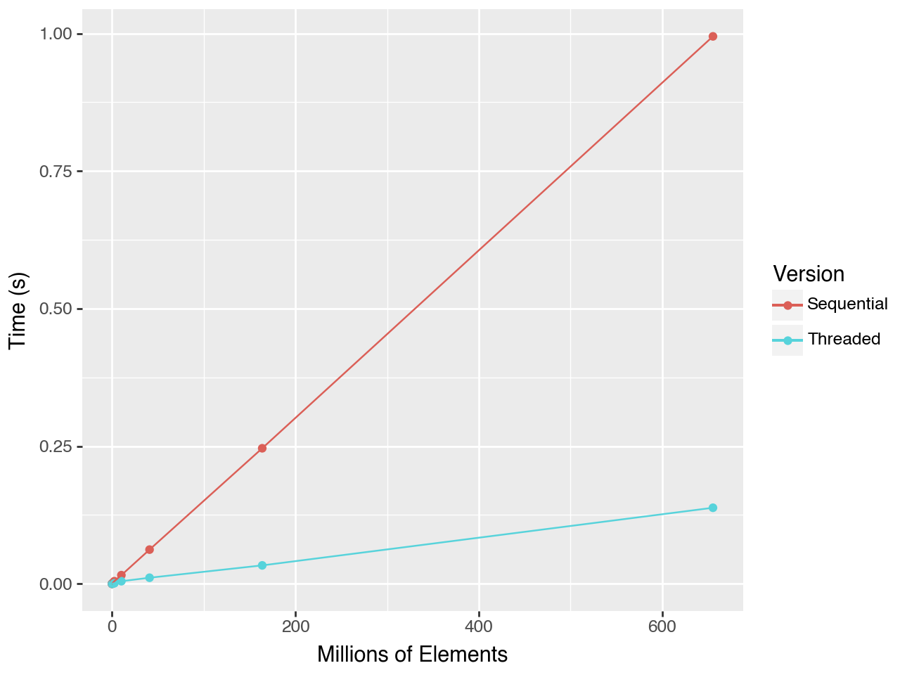
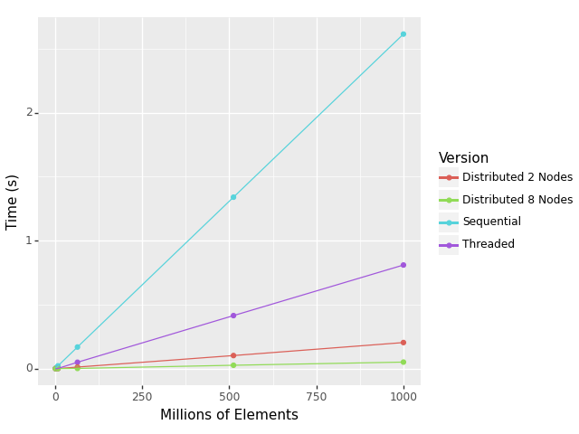
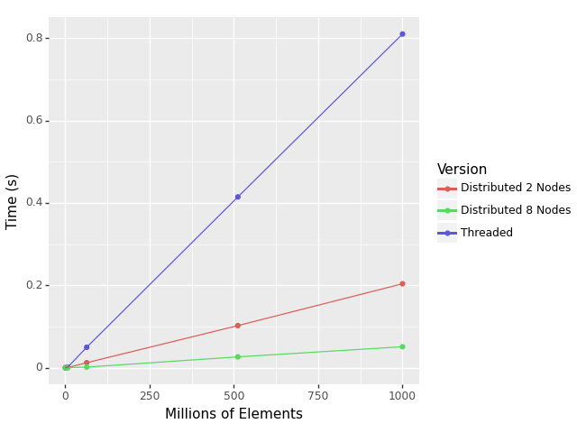

In this blog series, we share about a collaboration between HPE’s Advanced Programming Team and [C]Worthy, a nonprofit startup working on safe, effective ocean-based carbon dioxide removal.
Scientists at [C]Worthy are developing a state-of-the-art, massively parallel ocean modeling code in Chapel, combining fluid dynamics with the many biological, geological, and chemical processes occurring in the ocean and atmosphere. Simulating these processes could be done in Chapel, but a robust and popular Fortran library already exists: the Marine Biogeochemistry Library (MARBL). Our challenge, and the focus of this series, is integrating the Fortran MARBL library into [C]Worthy’s Chapel program that simulates fluid dynamics.
There’s so much to share about the science, but we’ll have to save that for a later post in the series. Today, we want to begin by sharing techniques we used to support interoperating between Chapel and Fortran. This post focuses on making function calls on arrays across the language boundary, with a future post focusing on supporting arbitrary, user-defined data structures.
Why Interoperate?
The aim of the Chapel programming language is to give developers a tool they can use to write fast, scalable, and portable applications with ease. In our view, we’ve been successful. For example, the tech lead at [C]Worthy was able to learn Chapel, write a distributed image analysis code in it, and have collaborators present the results in less than six months. But there are countless applications, libraries, and packages already written in other languages, and it doesn’t always make sense to completely re-implement software in every language.
This is where interoperability, meaning the integration of multiple programming languages in one application, fits in. Robust interoperability support enables developers to reuse existing code without giving up flexibility in their choice of language. It means avoiding the costs, in both time and headache, of re-writing, re-testing, and re-debugging software in a new language. And it means using the best tools for each task, without compromise.
There are as many possibilities as there are languages: a Python script uses a C implementation to speed up common algorithms; a C++ application calls out to Swift or Rust for security-critical tasks; or, as we’ll learn about here, a distributed parallel Chapel program that uses existing functions written in Fortran (or in C, to access NetCDF support). Let’s dive in.
A Basic Example
Chapel/Fortran interoperability hinges on the fact that Chapel and Fortran both independently interoperate with C. Essentially, we use a C header file as a bridge to connect a function call in Chapel to its implementation in Fortran.
Let’s say we’ve got the following functions in Fortran that convert an array of temperatures between Fahrenheit and Celsius. We use this example for brevity, acknowledging that most practical applications of interoperability would use much more complex functions.
|
|
Click here for help interpreting the Fortran code
We’ll go line by line.
- Line 1 defines a module, called
temperatures, that contains code. This is essentially identical to a Chapel module. It can define data types, include other modules, and define procedures. - Line 2 includes the
iso_c_bindingmodule, which contains everything necessary to call Fortran methods from other languages. We’ll see the symbols from this module show up soon. - Line 3 separates the part of the module that includes other modules and defines custom data types from the part of the module that defines subroutines.
- Line 4 declares a subroutine (a procedure without a return value), called
FtoC, that takes two arguments. Thebind(...)statement tells the Fortran compiler that it may be called by programs in other languages using the nameFtoC. - Lines 5 and 6 provide information about the arguments to the subroutine. Notice that the declarations of the arguments are different from their order within the subroutine’s signature on the line above. This allows us to use one argument to define the other. The
lenargument is an integer that is expected to be the same bitwidth as a Cint. Furthermore, thelenargument is just an input argument, not an output argument. Thearrargument is an array of real numbers with the same bitwidth as a Cdouble. The array has lengthlen. - Line 8 implements the subroutine’s operation. Fortran supports scalar promotion, so the same arithmetic is computed for each element of the array.
- Line 9 ends the subroutine, and the rest of the file is very similar to the
FtoCsubroutine, but performs the inverse conversion.
To indicate to the Chapel program how to use these methods, we need a corresponding C header file that exposes the interface. That looks like this:
|
|
Note that in addition to the the double* typed arr argument, we also use a pointer for the len argument. This is because Fortran uses pass-by-reference by default.
You can use the value attribute within the definition of the subroutine arguments to use pass-by-value.
This is not commonly used in the Fortran code we’ve seen though, so we omit it here.
Finally, we can use our Fortran subroutines in Chapel. Let’s populate an array and pass it in:
|
|
c2chapel tool can be used to generate extern declarations automatically, or an
extern block can be used to have the Chapel compiler parse the C header file contents directly.]
Click here for help interpreting the Chapel code
We’ll go line by line again.
- Line 1 imports a Chapel module called
CTypesthat contains procedures and data types useful for interoperating with C code, for example the data typesc_ptr,c_double, andc_int. - Line 2 indicates to the Chapel compiler that during compilation it should also include the
temperatures.hfile. - Lines 4 and 5 declare that there are two procedures,
FtoCandCtoF, that are defined elsewhere, and that during compilation, we will provide their implementations. - Line 7 declares an array of real numbers that has 5 elements, initialized using an array literal.
- Lines 9, 11, and 13 print a string to
stdout, followed by a string representation of the arrayarr. - Lines 10 and 12 make calls to the procedures defined in the Fortran file—the same ones that were declared as being
externin lines 4 and 5. Note that the arguments to these procedures are not the array and length variables alone. Instead, we use thec_ptrToprocedure to create a pointer to the data of the array that will be compatible with the C-like implementations. This is necessary because Chapel arrays are not represented as raw blocks of memory. Similarly, we castarr.size, which in Chapel is by default 64 bits wide, to ac_intwhich is 32 bits wide on most machines.
We need two compilation commands:
- Compile the Fortran code to an object file:
gfortran -c temperatures.f90 - Compile the object file along with the Chapel source:
chpl sequential.chpl temperatures.o
When we run, we’ll get the following output:
Original Array: 32.0 212.0 98.6 0.0 100.0
After FtoC: 0.0 100.0 37.0 -17.7778 37.7778
After CtoF: 32.0 212.0 98.6 0.0 100.0
And there we have it. A Chapel program using procedures implemented in Fortran.
Adding Threaded Parallelism
Next, we add shared-memory parallelism to this application. And while we’re at it, let’s change our data slightly. Instead of a 1D array of temperatures, what if we had a 2D grid of temperatures? Perhaps even a grid of ocean surface temperatures?
Our Chapel program starts much the same. We import the C header file, declare the extern procedures, and initialize our data, using a forall loop to do so in parallel:
|
|
We could use the Fortran functions on this array in one go, sequentially:
FtoC(temps, temps.size: c_int);
But we can also use multiple threads to apply the function in parallel using Chapel’s forall loop:
Performance comparison
Let’s compare the performance of a sequential version and a parallel version. The code is nearly identical, except for how the Fortran subroutines are called. The sequential version makes a single, sequential call to each of the subroutines. The threaded version iterates over the rows in parallel, using multithreading to process multiple rows at a time.
Sequential:
|
|
Threaded:
|
|
If we run for different values of n and plot the output, we can see the threaded version significantly outperforms the sequential. Data was collected using an Apple Macbook Pro with an M2 Pro processor and 32GB memory, using 8 threads for the threaded version:

Sequential and Threaded Execution Times.
We can see from this example that Chapel can be used as a powerful tool to orchestrate shared-memory parallelism for codes written in Fortran. But why stop here? Let’s add another layer: distributed-memory parallelism.
The Big One: Distributed Parallelism
For most problem sizes of interest, shared-memory parallelism is useful but ultimately insufficient, as the problems simply cannot fit within a single compute node’s memory. For the type of ocean modeling we want to tackle, we need to distribute our program across multiple compute nodes (locales in Chapel parlance). This is a problem that Chapel is tailor-made to solve.
Let’s make another jump, from a 2D grid of temperatures to a 3D cube of them. Our code is still eminently recognizable compared to the 2D example:
|
|
An important change: rather than declaring our array’s indices anonymously with the array, we use blockDist.createDomain to create a named domain that distributes our array’s indices and their corresponding elements across the locales we use to execute the program.
Chapel uses “locales” to refer to separate execution environments that do not share access to the same memory, but are involved in the execution of the same program.
Our initialization needs almost no modification.
The forall loop, which previously parallelized our initialization across multiple threads, now handles distributing the execution both across locales and across threads.
This is because the forall loop is iterating over a distributed domain.
We use a different strategy for distributing the execution of the Fortran subroutines.
Using the coforall loop combined with the on clause, we distribute execution over multiple locales.
On each locale, we get the portion of the array that lives on that locale, then use shared-memory parallelism to apply the Fortran subroutine.
|
|
Click here for help interpreting the above loop.
The first line of the above block is what allows us to run the code on all the locales (nodes) our program is using.
The coforall loop iterates over the program’s locales, launching parallel tasks that execute the body of the coforall.
The on loc statement indicates that the code within the block should be run on that locale.
Combined with the coforall loop over the locales, this has the effect of starting a task on each locale in parallel.
Within the on loc block, we use distDomain.localSubdomain() to get the portion of the domain that belongs to that locale.
Similarly, we get a reference to the portion of the array on that locale using the temps.localSlice(localIndices) call.
This ensures that each locale is only working on its portion of the distributed array.
Finally, the forall i in localIndices.dim(0) loop uses shared-memory parallelism within each locale to call out to the Fortran subroutine, as in our previous, shared-memory version.
Performance comparison
Let’s compare the performance of the sequential, multi-threading, and distributed versions of this approach. We can actually do this all with one code, leveraging Chapel’s parallelism configuration constants to vary how many parallel threads each locale uses.
The sequential version runs with --numLocales=1 --dataParTaskPerLocale=1.
The multithreaded version runs with --numLocales=1 --dataParTaskPerLocale=16. Leaving dataParTaskPerLocale unset defaults the thread count to the maximum number of threads, but we set it to 16 here to be explicit.
Finally, we run the distributed version with 2 and 8 locales. These use 16 threads as well.
We’ve removed the prints and added timers, but otherwise the code is identical to the above example:
|
|
Here’s the plot of execution times for the different versions. Data was collected on an HPE Cray EX system:

Sequential, Threaded, and Distributed Execution Times.
And here’s the same data without the sequential data points:

Threaded, and Distributed Execution Times.
This example shows the real power of Chapel for orchestrating parallelism. Because the language is built with parallel programming in mind, introducing parallelism doesn’t mean completely rewriting the code. Nor does it mean having to learn a whole new programming model (or two!), as is the case when using OpenMP and MPI. Instead, we can make shared- or distributed-memory parallel calls to the same Fortran routine, without touching the Fortran code once.
Summary
We’ve looked at three versions of function call interoperability between Chapel and Fortran: sequentially, with shared-memory parallelism, and with distributed-memory parallelism. In each case, we’ve used the same Fortran subroutines, orchestrating parallelism with Chapel. But the ocean can’t be grasped with function calls alone. In the next post, we’ll look at Chapel/Fortran interoperability for user-defined data types.